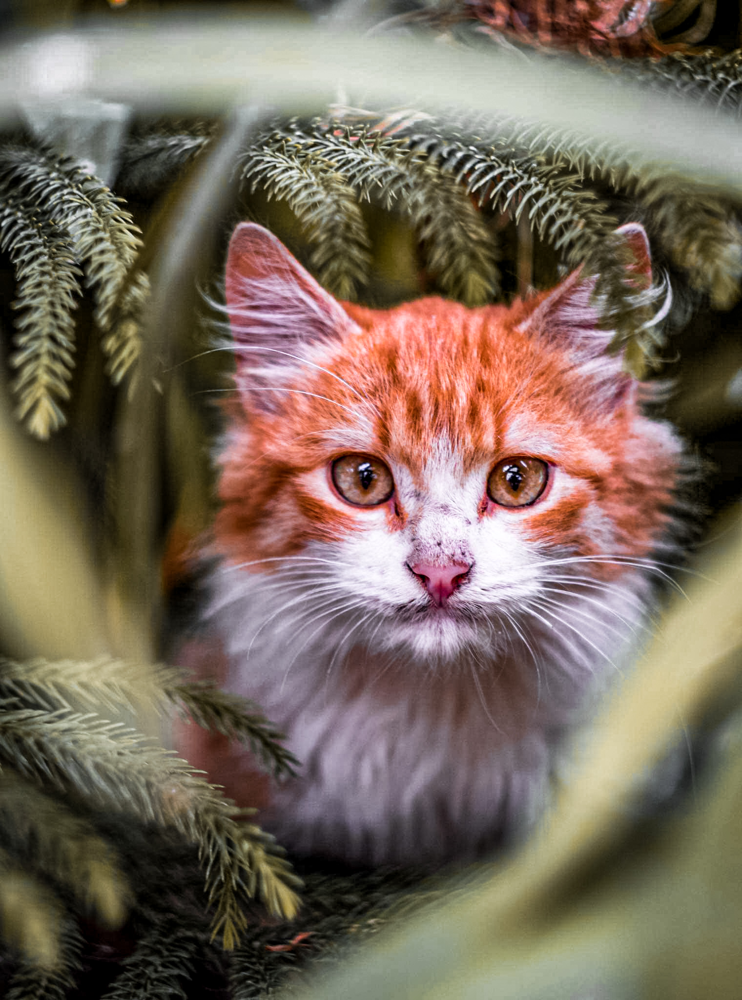
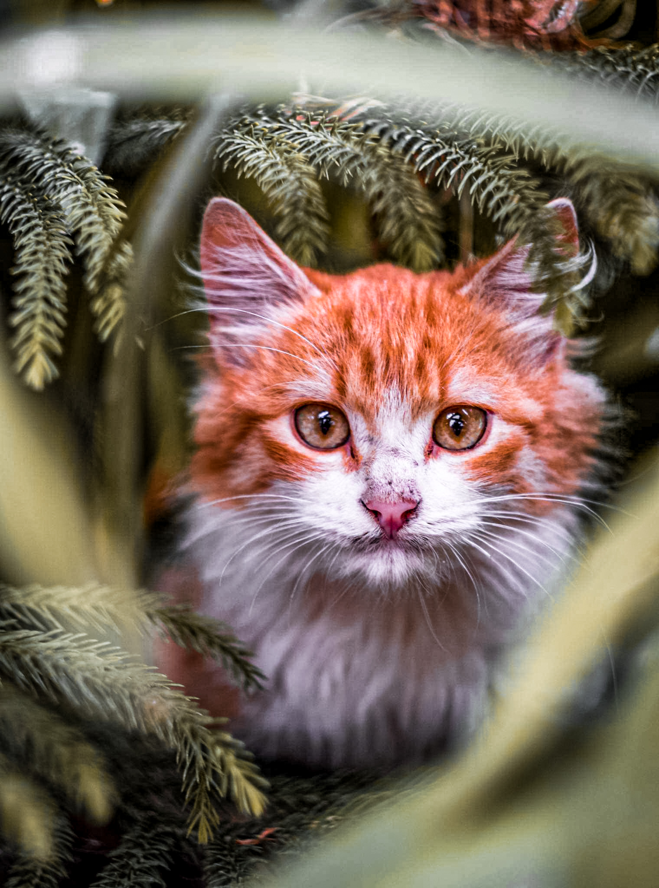
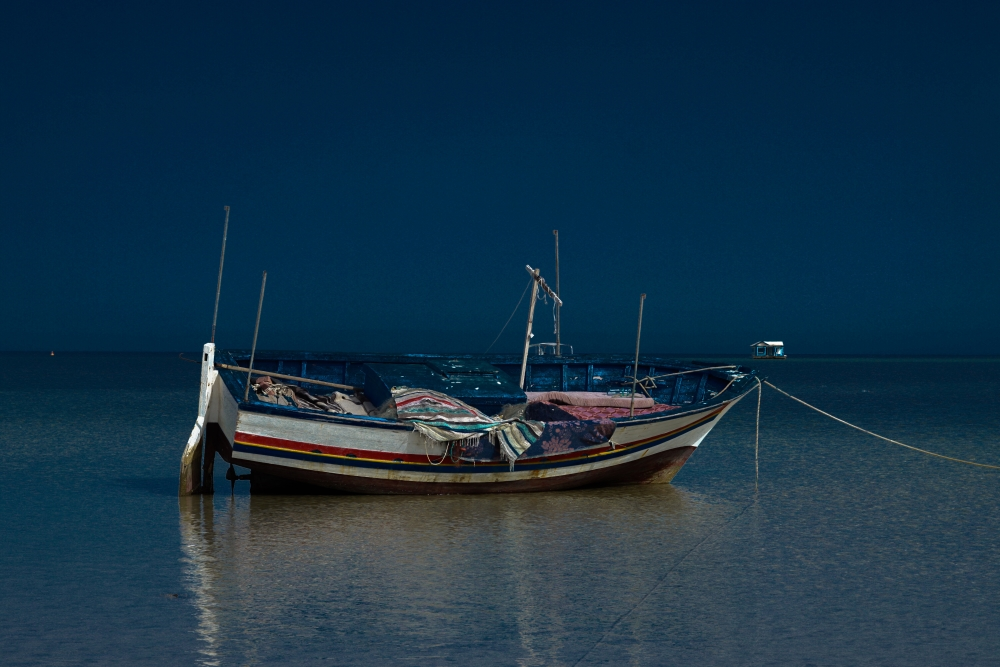
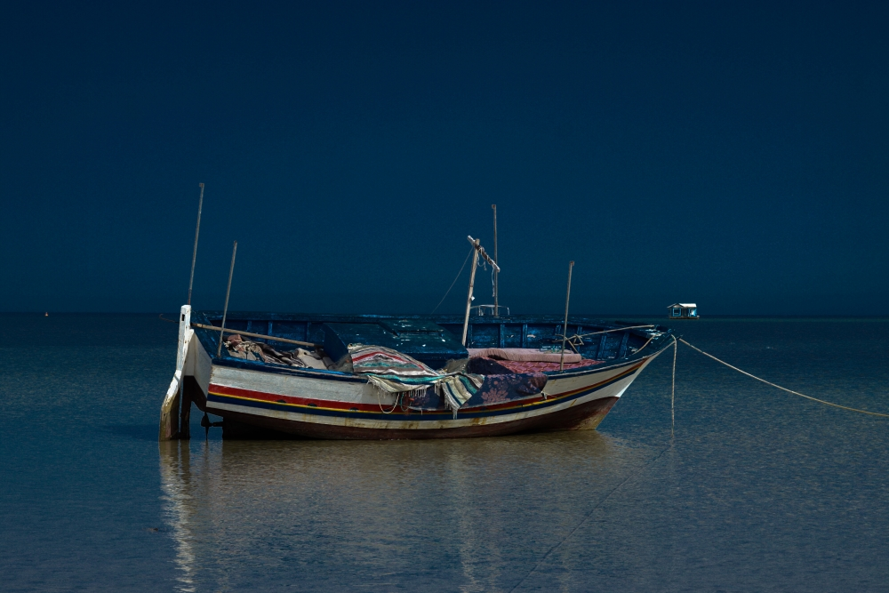
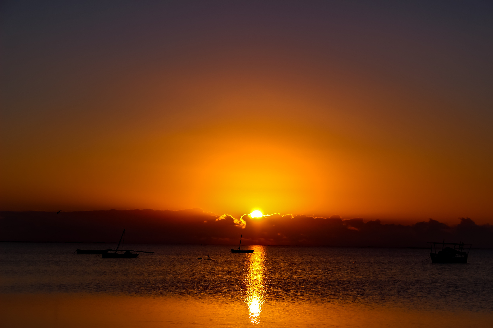
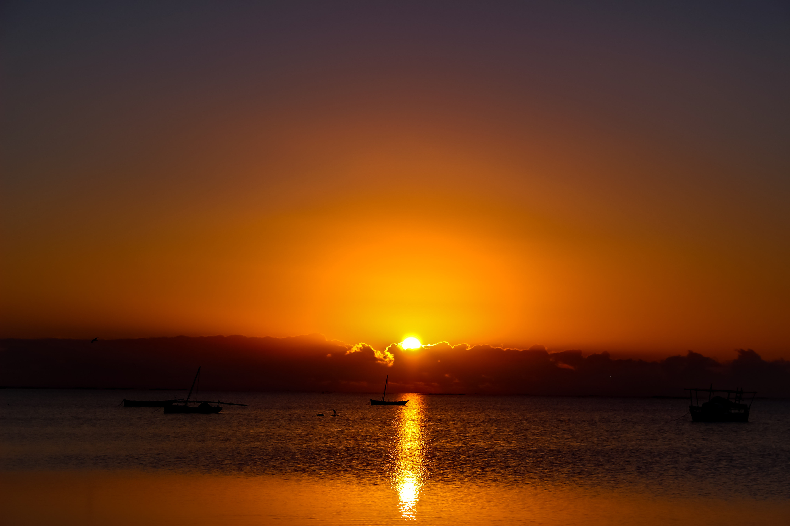

Mes Passions
En tant que photographe, ma passion principale est de capturer des moments uniques et de les partager avec le monde. Mon travail reflète mon engagement envers l'esthétique, la créativité et la narration visuelle.
Outre la photographie, j'apprécie également les sports, en particulier la randonnée et la photographie de paysages. Ces activités me permettent de m'immerger dans la nature et de trouver l'inspiration.
 

 

 
